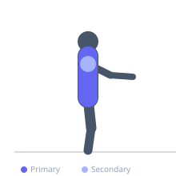

Exercise guide / Quadruped Thoracic Windmill
Quadruped Thoracic Windmill
A thoracic spine rotation mobility exercise performed from the quadruped position. One hand is placed behind the head, and the elbow rotates downward threading under the body before opening upward toward the ceiling in a windmill motion. This targets segmental thoracic rotation, challenges thoracic extension and rotation simultaneously, and mobilizes the facet joints of the upper and mid back. Used in rehabilitation for thoracic stiffness, shoulder impingement secondary to poor thoracic mobility, and low back pain related to limited thoracic rotation.
Primary muscles
erector spinae
trapezius middle
Secondary muscles
rhomboid major
deltoid posterior
Stabilizers
transverse abdominis
Equipment
No Equipment (Bodyweight)


Starting position
- Begin in a quadruped position with wrists under shoulders and knees under hips. Place one hand behind the head with the elbow pointing out to the side.
Setup
- No equipment needed. A mat is recommended for knee comfort.
Steps
- Step 1: Begin in quadruped with right hand behind head, elbow pointing right.
- Step 2: Thread the right elbow downward and under the body, rotating the thoracic spine to the left and reaching the elbow as far left as possible.
- Step 3: Reverse the rotation, opening the right elbow upward toward the ceiling, following it with the gaze. Rotate as far as the thoracic spine allows.
- Step 4: Return to the neutral position. Each down-then-up rotation equals one repetition. Complete all reps on one side before switching.
Coaching cues
- Imagine your hips are locked in place — only the upper back rotates
- Follow the elbow with your eyes — the gaze leads the thoracic rotation
- Breathe into the chest as you open upward
Breathing
- Exhale as you thread under. Inhale as you open upward and rotate toward the ceiling.
Range of motion
- Work at the end-range of comfortable thoracic rotation in each direction. The hips and lower back must not rotate.
Tempo
- 2s thread down, 1s end-range hold, 2s open up, 1s end-range hold
Common mistakes
- Rotating through the lumbar spine rather than the thoracic spine — the lower back and hips should remain stable
- Rushing through the range without pausing at the end of rotation in each direction
- Using the supporting arm to push into rotation rather than allowing the movement to come from the thoracic spine
Safety
- If you feel any joint locking or sharp pain in the thoracic spine during rotation, reduce range and consult a physiotherapist
- Avoid if you have an acute thoracic disc herniation unless prescribed by a physiotherapist
Training
- mobility: 5–10 reps
- endurance: 8–15 reps
- mobility: 2–3 sets
- endurance: 2–3 sets
- Rest: {'mobility': 60, 'endurance': 45}